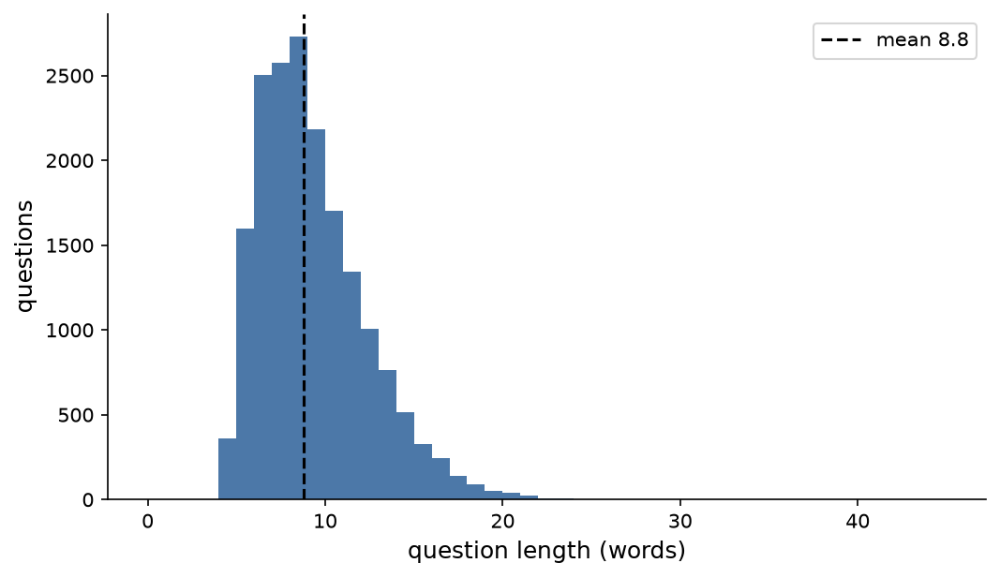
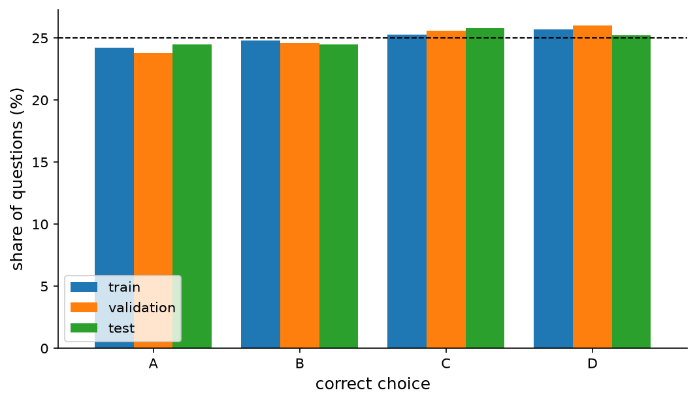
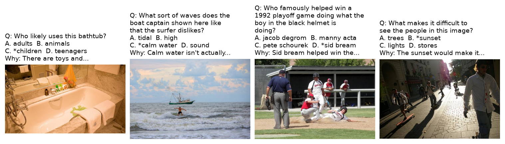

M1 Proposal PDF report
Professional report - 11 pages
Preview PDF
Source: Assignment3/ (download.py, data_loader.py, 01_eda.ipynb, splits.csv).
Dataset and task
Source, version and licence
Dataset: A-OKVQA [1], a visual question answering benchmark whose questions need commonsense or world knowledge in addition to what is visible in the image.
https://huggingface.co/datasets/HuggingFaceM4/A-OKVQA
Version: Hugging Face revision d1b0efa (d1b0efa3a436e9101dfbde3752db7607da696c35), downloaded on 9 November 2026 with Assignment3/download.py. Parquet files with the JPEG bytes inside, about 1.2 GB in total.
Licence: the A-OKVQA annotations are released by AllenAI under Apache 2.0. The images are COCO 2017 photos [2], which keep their Flickr licences; we use them only for course work.
How the data was made: crowd workers looked at a COCO image and wrote a question that cannot be answered from the image alone or from knowledge alone. Each question has 4 answer choices, 10 free-form answers from 10 different workers, and 3 short rationales that explain the answer.
Task, modalities, input and output
Task: multiple-choice VQA. One sample is one image with one question and exactly 4 choices.
| Item | Definition |
|---|---|
| Modality A | Text: the question (mean 8.8 words) and the 4 choice texts (mean 1.3 words) |
| Modality B | Image: one RGB COCO photo (median 640×480), resized to 224×224 |
| Extra annotation | 10 direct answers and 3 rationales per question. Used for evaluation and analysis only, never as model input |
| Output | Index of the correct choice, ŷ∈{0,1,2,3} |
| Prediction unit | One (image, question) pair |
Formulation. For choice j the model gives a score sj = fθ(image, question, choicej), pj = softmaxj(sj) and ŷ = argmaxj pj. Training minimises the cross-entropy -log py.
Why this task is multimodal. A worker wrote each question while looking at that image, so the pair is linked by the same scene. The answer needs both: the image says what is there (a red shirt, a clock at seven), and the question with the choices says what to do with it (which gang wears red, what hour it is). Section shows that text alone gets only a few points above chance.
Size
The handbook asks for about 10,000 question–image pairs for VQA. The official test split (6,702 questions) has no public labels, so we count only labelled pairs: 17,056 (train) + 1,145 (validation) = 18,201 labelled pairs on 17,661 images, which meets the threshold.
Data description and preliminary analysis
Source: Assignment3/01_eda.ipynb. Main numbers below; the notebook has the rest.
Pair counts and missing modalities
| Official split | Questions | Labelled | Distinct images | Images with 2 questions |
|---|---|---|---|---|
| train | 17,056 | 17,056 | 16,539 | 517 |
| validation | 1,145 | 1,145 | 1,122 | 23 |
| test | 6,702 | 0 | 6,030 |
| Check on the 18,201 labelled questions | Result |
|---|---|
| Missing or undecodable image, empty question | 0 |
| Not exactly 4 choices, label outside 0–3 | 0 |
| Not 10 direct answers or not 3 rationales | 0 |
| Questions with an empty choice | 7 (0.04%) |
| Questions with two identical choices | 37 (0.20%) |
| Images shared by the official train and validation splits | 0 |
| Grayscale images (converted to RGB) | 20 of 17,661 |
No image or question is missing, so no missing-modality strategy is needed for training. The 44 questions with an empty or repeated choice are kept; they are counted in the error analysis. We will still test what happens when the image is removed or replaced (Section ).
Images

The photos are COCO images, mostly 640×480 (4,005) or 640×427 (2,295); the median aspect ratio is 1.33 and the extremes are 0.33 and 4.81. Resizing to 224×224 squeezes a 4:3 photo horizontally by 25%. CLIP's own preprocessing resizes the short side and takes a centre crop instead, so this option will be compared in M2.
Text

| Words | mean | median | max |
|---|---|---|---|
| question | 8.8 | 8 | 44 |
| choice | 1.3 | 1 | 4 |
| direct answer | 1.2 | 1 | 4 |
| rationale | 11.1 | 9 | 65 |
| Opening | Questions | Share |
|---|---|---|
| what is | 4,109 | 22.6% |
| what type | 1,102 | 6.1% |
| what are | 850 | 4.7% |
| why is | 730 | 4.0% |
| how many | 595 | 3.3% |
| what color | 542 | 3.0% |
| what kind | 526 | 2.9% |
Questions are short (median 8 words) and every text fits the 77-token limit of the CLIP text encoder. The vocabulary is large (6,508 words in questions, 13,456 in choices) because the topics are open: animals, sports, food, history, brands. 64.5% of the questions start with “what” and 7.7% with “why”. A-OKVQA has no question-type field, so we will use the opening words as a rough type for the error analysis.
Labels and answer agreement

The correct letter is spread evenly: A 24.2%, B 24.8%, C 25.4%, D 25.7% over all labelled questions, so a letter bias cannot help. The correct choice appears among the 10 direct answers for every question, given on average by 3.7 of the 10 workers. Agreement between workers is moderate: the most common direct answer is given by 5.0 workers on average, and by 3 or fewer for 32.4% of the questions. The dataset flags 8.9% of the questions as difficult for direct answering.
Pair quality

The examples show the mix the dataset was built for: counting (how many people on the scooter), reading the scene (the hour on the clock), and outside knowledge (which gang wears red, which civilisation made a vase). In 76.8% of the questions at least one rationale repeats a word of the correct choice, so the rationales usually talk about the answer, which makes them useful to explain errors later.

Two kinds of low agreement show up. Some questions are vague (who uses this bathtub: adults or children?), so several answers are reasonable. Others need rare knowledge (which player won a 1992 playoff game by sliding home), which many workers did not know. In both cases the multiple-choice label is still one of the direct answers. We keep these questions and report accuracy on the high-agreement subset as a check.
How much can text alone answer?
Simple rules that never look at the image, built on our train split and scored on our validation split (1,710 questions):
| Rule | Validation accuracy |
|---|---|
| Chance | 25.0% |
| Always the most frequent letter (D) | 26.0% |
| Choice whose text was most often correct in training | 31.1% |
| Choice sharing most words with the question | 24.1% |
| Longest choice | 28.5% |
The best rule reaches 31.1%, only 6 points above chance, although 89.6% of the validation questions offer at least one choice that was correct somewhere in training. The dataset was built so that the wrong choices are plausible answers, so answer frequency and word overlap help little. This is the opposite of datasets where the text alone gives most answers, and it means the image should matter. A trained text-only model may still learn more than these rules, which is why it is one of the baselines.
Data protocol
Splits and leakage prevention
| Item | Plan |
|---|---|
| Test | The official validation split: 1,145 questions on 1,122 images, used once at the end |
| Train / validation | The official train split divided about 90/10 by image: 15,346 / 1,710 questions on 14,885 / 1,654 images |
| Seed | GroupShuffleSplit, seed 42, groups = image hash; saved in Assignment3/splits.csv |
| Split unit | The image. 540 images have two questions, and both always stay in the same split; the code asserts that no image is in two splits (0 overlaps found) |
| Unused | The official test split (6,702 questions, no labels) |
| Leakage notes | CLIP was pretrained on web images, and some COCO photos may be among them; this cannot be checked and affects all models equally |
| Subset rules | None. All 18,201 labelled questions are used |
The letter shares and the share of difficult questions are close in the three splits (difficult: 9.1%, 8.6% and 6.1%). With 1,145 test questions one standard error of accuracy is about 1.4 points, so differences smaller than about 3 points will need the seed comparison to be trusted.
Preprocessing
- Image: decode JPEG, convert to RGB, resize to 224×224 (bicubic), scale to [0,1], normalise with the CLIP mean and standard deviation. No augmentation in the first runs.
- Text: the question and each choice go through the CLIP tokenizer (lower case, byte-pair encoding, at most 77 tokens). For the fusion models the text of choice j is “question + answer: choicej”.
- Batch: images [B,3,224,224] float32, labels [B] int64, plus B questions and B lists of 4 choices. One batch of 32 has channel means (-0.06, -0.09, -0.02) and standard deviations close to 1 after normalisation.

Experiment plan
Pipeline
Image, question, 4 choices, label → Resize, CLIP norm., tokenize → Frozen CLIP image + text encoders → Fusion head (score per choice) → Softmax over 4, cross-entropy → Adam, validation accuracy checkpoint → Test: argmax over choices → MC accuracy, DA score, per question type
Encoders and representations
All models use the same frozen CLIP ViT-B/32 [3] (openai/clip-vit-base-patch32, the checkpoint used in the course slides), loaded with Hugging Face transformers.
- Image encoder: ViT-B/32, 87.5M parameters. Gives one global vector v∈ℝ512 and 50 token vectors V∈ℝ50×768 (1 class token + 7×7 patches).
- Text encoder: 63.2M parameters. Gives one vector per text: q for the question and cj for each choice (ℝ512), and token vectors T∈ℝL×512.
- Alignment: each question belongs to one image, so pairing is given by the dataset. The global image and text vectors already live in one space because CLIP was trained with a contrastive loss.
The encoders are frozen, so their outputs are computed once and cached; only the heads below are trained.
Models
| Model | Uses | Score for choice j |
|---|---|---|
| 0. Reference rules | text | Chance, letter prior, answer-text prior (Table ). No training |
| 0'. Zero-shot CLIP | image, text | cosine(v, text(question + answer: choicej)). No training |
| 1. Text only (A) | question, choices | sj = MLP([q; cj; q⊙ cj]) |
| 2. Image only (B) | image, choices | sj = MLP([v; cj; v⊙ cj]); the choices are needed to name the answers, the question is removed |
| 3. Simple fusion | image, question, choices | Late concatenation of the global vectors: sj = MLP([v; q; cj; v⊙ cj; q⊙ cj]) |
| 4. Improved fusion | image, question, choices | Cross-attention: the text tokens of “question + answer: choicej” are queries, the 50 image tokens are keys and values (1 layer, 8 heads, d=512); the attended tokens are mean-pooled and an MLP gives sj |
Models 1 to 3 differ only in which vectors enter the same kind of MLP, so their comparison isolates the modalities. Model 4 moves the fusion from one global vector per modality to token level, so the question can look at the image regions it is about (the clock, the shirts). We expect the largest gains on questions about details of the scene (“how many”, “what color”, “what hour”) and smaller gains on pure knowledge questions.
Loss. One loss for every model: cross-entropy over the 4 choices. There is no separate per-modality loss in the main models; the unimodal baselines are trained on their own with the same loss. An auxiliary loss on each branch is a possible extension.
Training. Adam, learning rate 10-3 for the heads (chosen between 10-3 and 3×10-4 on validation only), batch size 64, 20 epochs, checkpoint with the best validation accuracy, seeds 42–46. If time allows, one extra run unfreezes the last block of the CLIP image encoder with learning rate 10-5 (frozen vs fine-tuned comparison).
Ablations
| Ablation | Changed factor | Question it answers |
|---|---|---|
| Remove a modality | Models 1 and 2 against 3 | How much does each modality add? |
| Shuffle images at test | Model 3 / 4 tested with the image of another question | Does the model use the image, or only the text? |
| Fusion level | Global concatenation (3) vs token cross-attention (4) | Does looking at image regions help? |
| Fusion operation | Model 3 with and without the ⊙ product terms | Is plain concatenation enough? |
| Freeze vs fine-tune | Last CLIP vision block frozen or trained | Is CLIP's pretraining enough for this task? |
Evaluation
- Main metric: multiple-choice (MC) accuracy on the test split, mean ± standard deviation over seeds 42–46, as in the A-OKVQA paper.
- Second metric: direct-answer (DA) score of the chosen text, using the A-OKVQA rule: score =min(n/3, 1), where n is the number of workers who gave that answer. It gives partial credit when the chosen answer is acceptable to some workers.
- Breakdowns: accuracy by question opening (what / why / how many / what color ), on the difficult questions, and on the high-agreement questions.
- Support and conflict cases: questions where model 3 or 4 is right and model 1 is wrong (the image helps) and questions where model 1 is right and the fusion model is wrong (the image misleads), shown with their rationales.
- Cost: trainable and total parameters, feature caching time, training time per run, inference time per question.
- A difference between two models counts only if the gap of their means is larger than the larger seed SD.
Compute estimate
Measured on our machine (CPU, 14 PyTorch threads): the CLIP image encoder takes about 18 ms per image and the text encoder about 6.5 ms per text in batches of 64. Caching the features of the 17,661 images and of about 164,000 texts (18,201 questions, 72,804 choices and 72,804 “question + answer” strings) takes about 5 + 18 minutes on the CPU, or a few minutes on one GPU. The cached image tokens take 17,661×50×768 float16 values, about 1.4 GB. The trainable heads have about 1–3M parameters, so 20 epochs take a few minutes per run. The whole plan (5 models, 5 ablations, 5 seeds) is about 50 short runs and fits in a few GPU hours.
AI Usage Disclosure
| Field | Entry |
|---|---|
| Tool | Claude Code (Anthropic), model Claude Opus 5.5, with helper agents on Claude Sonnet, in the group's VS Code workspace |
| Used by | Võ Thị Như Quỳnh |
| Time / stage | 9 November 2026, dataset proposal (A3-M1) |
| Purpose | Searching Hugging Face for datasets that meet the handbook thresholds and comparing them; coding assistance (download.py, data_loader.py, 01_eda.ipynb); running the EDA and the CLIP speed test; first draft of this proposal and of the assignment page. The group chose A-OKVQA from the compared datasets |
| Affected sections | All sections of this proposal; Assignment3/ |
| Representative prompt | “Switch Assignment 3 to the A-OKVQA dataset, read the handbook and satisfy all requirements; keep the code simple.” |
| How output was verified | Every number comes from the executed 01_eda.ipynb; the split is checked by assertions in the code; the model plan was compared with the course slides on CLIP and cross-attention; the group reviews code and text before submission |
| Responsible member | Võ Thị Như Quỳnh |
| Verification sources | A-OKVQA paper [1], CLIP paper [3], course slides (multimodal learning), Hugging Face transformers documentation |
References
- D. Schwenk, A. Khandelwal, C. Clark, K. Marino and R. Mottaghi, “A-OKVQA: A benchmark for visual question answering using world knowledge,” in Proc. ECCV, pp. 146–162, 2022. Dataset: https://huggingface.co/datasets/HuggingFaceM4/A-OKVQA, revision
d1b0efa. - T.-Y. Lin et al., “Microsoft COCO: Common objects in context,” in Proc. ECCV, pp. 740–755, 2014.
- A. Radford et al., “Learning transferable visual models from natural language supervision,” in Proc. ICML, PMLR 139, pp. 8748–8763, 2021.